SubVox Pro
SubVox Proを使うと、Unity内で直接、ボイスラインから音声と同期した字幕や吹き替え音声を作成できます。
- 文字起こし：クラウドサービスを利用するか、完全にオフラインで、オーディオクリップをタイミング情報付き字幕に変換します。
- 編集：波形上でタイミングを調整し、単語のスタイルを設定し、字幕の読み取り速度を確認します。
- 翻訳：50言語に翻訳し、音声合成で吹き替えを作成します。必要に応じて、各キャラクター固有の声も使用できます。
- 再生：少数のコンポーネントでゲーム内の字幕と音声を再生し、ボイスラインからゲームプレイイベントをトリガーし、ボイスラインを Unity Timelineにドラッグ＆ドロップします。
目次
- 開始する前に
- クイックスタート
- SubVox Proのウィンドウ
- 文字起こし
- 翻訳
- 音声合成による吹き替え
- 話者と声の個性
- オーディオの編集
- ゲーム内でのボイスラインの再生
- ボイスラインからゲームプレイをトリガーする
- Unity Timeline
- 複数のファイルを一度に処理する
- オフラインエンジン（アカウント不要、APIキー不要）
- Google Sheetsを使った人手による翻訳
- 設定
- キーボードとマウス
- 対応言語
- データとオンラインサービス
- ゲーム内で使用するAI生成音声
- ファイルの保存先
- 更新とアンインストール
- トラブルシューティング
- サポート
各サービスのアカウントとAPIキーの取得方法は、 プロバイダーの設定で手順を追って説明しています。
開始する前に
- Unity 2022.3 LTS以降（Unity 6を含む）。レンダーパイプラインはBuilt-in、URP、HDRPのいずれも使用できます。
- TextMesh Pro — プロジェクトにまだインポートしていない場合は、TMP Essentialsを一度インポートします。Unity 2022.3では、まず Package ManagerからTextMeshProパッケージをインストールします（Unity 6にはすでに含まれています）。
- Unity Timelineは任意です。パッケージをインストールすると、Timelineの機能が表示されます。
- ゲーム内では、SubVox ProはUnityがサポートするすべてのプラットフォームで動作します。
- エディター内では、SubVox ProはWindowsで動作確認済みです。自分のAPIキーを使用するクラウドサービスは、 macOSおよびLinuxのエディターでも動作すると考えられますが、まだ検証していません。オフラインエンジン（アカウント不要の文字起こし、翻訳、吹き替え）を利用するには、Windowsのエディターが必要です。
クイックスタート
1つのオーディオクリップから、数分で画面上に音声と同期した字幕を表示できます。
SubVox Proのすべての機能には、Tools ▸ SubVox Pro ▸ Hubからワンクリックでアクセスできます。このタイル形式のウィンドウから、ボイスラインエディター、バッチ処理、Google Sheets、プロバイダーの比較、追加のオフラインモデル、サンプルシーン、ドキュメント、プロバイダーの設定ガイド、設定を開けます。ホーム画面には9つのタイルがあります。Documentationを選択すると、Online（ガイド、プロバイダーのガイド、スクリプトリファレンス。英語／フランス語の切り替えが可能）とLocal（オフラインで利用できる英語のPDF）だけの画面が開きます。 Backでホーム画面に戻り、Provider Setupで同じPDFのProvider Setupセクションを直接開けます。

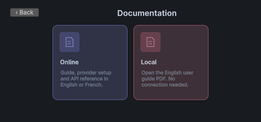
1. 文字起こしの方法を選択します。音声認識サービスのAPIキーを Tools ▸ SubVox Pro ▸ Settingsに貼り付けるか（取得方法はこちら）、WindowsではWhisperまたは Parakeetを使用します。これらは無料でオフラインで動作します（初回利用時にモデルのダウンロードを案内します）。
2. ボイスラインを作成します。 Assets ▸ Create ▸ SubVox Pro ▸ Voice Lineで作成し、そのアセットを選択して、InspectorのSet Up Voice Line をクリックします。新しいボイスラインのSubVox Proウィンドウが開きます。Language（初回は英語、その後は前回選択した言語）を確認し、Add an audio trackを選択してクリップを指定するか、音声を録音します。
または、Projectウィンドウでオーディオファイルを右クリックし、SubVox Pro ▸ Set Up Voice Lineを選択します。新しいボイスラインの保存先を選択すると、そのオーディオが割り当てられた状態でエディターが開きます。
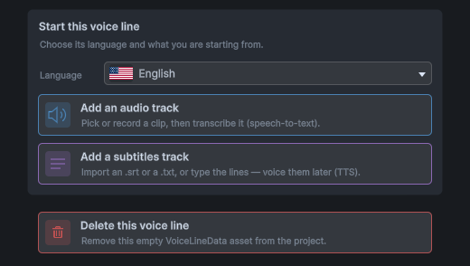
3. 文字起こしします。 AI Tools ▸ Transcriptionでプロバイダーと音声の言語を選択し、Analyze、続いてSplitをクリックします。字幕が波形上に表示されます。
4. 調整します。波形上のマーカーをドラッグし、下のリストでテキストを修正して、Spaceを押して音声を確認します。
5. ゲーム内で表示します。 [SubVox Pro]とSubtitle Displayerのプレハブ（SubVoxPro/Prefabs）をシーンにドラッグ＆ドロップし、ボイスラインを再生します。
using SubVoxPro;
SubVox.Play(myVoiceLine);
まず動作を確認してみたい場合は、Tools ▸ SubVox Pro ▸ Open Example Sceneで、ボイスライン、会話シーケンス、言語切り替え、単語ごとの表示機能を備えたサンプルシーンを開けます。Playを押すだけで再生できます。
SubVox Proのウィンドウ
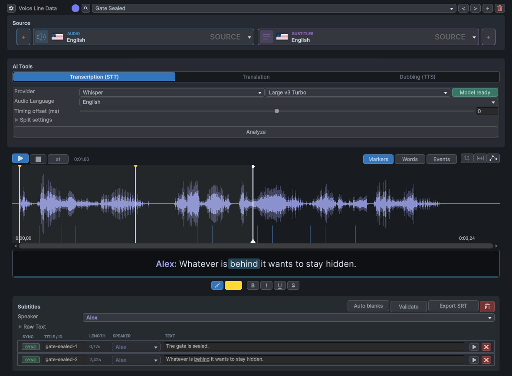
Tools ▸ SubVox Pro ▸ Voice Line Editor、またはボイスラインのInspectorにあるSet Up Voice Lineから開けます。上から順に説明します。
- Voice Line Data — 編集中のボイスラインです。新規作成、他のボイスラインの参照、削除用のボタンがあります。色付きのドットは、Projectウィンドウのアセットアイコンに表示されるタグで、ボイスラインの分類に使います。
- Source — AUDIOとSUBTITLESのセレクターです。各ボイスラインには1つのソース言語（旗アイコン。クリックすると変更できます）があり、翻訳または吹き替えされた言語ごとに1つのトラックがあります。2つのセレクターは独立しているため、例えば英語の音声を聞きながらフランス語の字幕を読むこともできます。
- AI Tools — 文字起こし、翻訳、吹き替え（下記）です。
- Timeline — 字幕のマーカーが表示された波形です。各マーカーは字幕の開始位置を示します。テキストのないマーカーは画面の字幕を消去します（空白）。
- Live preview — 再生ヘッドの位置にある字幕を、ゲーム内と同じ見た目で表示します。その上にある色やスタイルを選択し、単語の上をドラッグして適用します（右ボタンを押しながらドラッグすると消去します）。
- Subtitles — 字幕ごとに1行ずつ、名前、長さ、話者、テキスト、再生ボタンが表示されます。
タグと言語
Voice Line Dataの横にあるタグをクリックして、色と形状を選択します。Clear tagでタグを削除できます。形状を使うと、色だけに頼らずにボイスラインを区別できます。A-Zまたは0-9をクリックすると、英字や数字を形状として使用できます。

ソース言語の旗アイコンをクリックして、音声の言語を選択します。旗アイコンは言語を示し、話者の国籍を示すものではありません。ピッカーには言語名とコードが表示されるため、旗を見分けられなくても言語を選択できます。

オーディオなしで開始

ボイスラインは、オーディオではなくテキストから作成できます。「Add a subtitles track」を選択し、.srtファイル（タイミング付きの字幕）、.txtファイル（1行につき1つの字幕。読みやすい速度になるようにタイミングが自動設定されます）をインポートするか、字幕を直接入力します。ボイスラインの「Length」を設定します。オーディオを追加するか、テキストから吹き替え音声を生成するまでは、ゲーム内でその長さだけ再生されます。
オーディオの録音
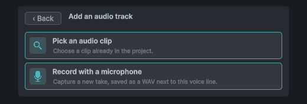
「Record with a microphone」（「Add an audio track」内、またはAUDIOセレクターの横にある「+」から選択）を選択すると、小さな録音ウィンドウが開きます。マイクを選択し、レベルを確認しながら録音します。再生して確認した後、「Use recording」を選択します。録音した音声は、ボイスラインと同じフォルダーにWAV形式で保存されます。macOSでは、システム設定でUnityによるマイクの使用を許可してください。
字幕の確認
- 「Show CPS」（「Settings」内）を有効にすると、各字幕の読み取り速度が表示され、速すぎる字幕が示されます。
- 「Check Subtitles」（「Show CPS」を有効にすると表示されます）では、空の名前や重複した名前、クリップの時間範囲外にある字幕、字幕の重なり、速すぎて読み切れない字幕などの問題を1つずつ順に確認し、ワンクリックで修正できます。すべての操作は元に戻せます。
- 「Auto blanks」は、誰も話していない間、マーカーを追加せずに字幕を非表示にします。ポップアップで有効にし、非表示にする無音区間の長さを調整します。字幕が非表示になる区間は、波形上で網掛け表示されます。
- 「Export SRT」は、字幕を
.srtファイルとして保存します。

「Silence」では、無音区間と判定するために、声よりどの程度音量が小さい必要があるかを設定します。「Min pause」では、ごく短い無音区間を無視します。「Hold out」では、声が止まった後もテキストを短時間表示し続け、「Lead in」では、発話が再開する前にテキストを再び表示します。「Only between two lines」では、文の途中で字幕が消えたり再表示されたりするのを防ぎます。
ボイスラインの削除
ごみ箱ボタンでボイスラインを削除します。関連するファイルが一覧表示されます。SubVox Proが生成したファイル（吹き替え音声、録音）は選択済みで、自分で用意したファイルは選択されていません。他で使用中のファイルはロックされています。削除した項目はすべてシステムのごみ箱に移動するため、復元できます。
文字起こし

- 「Provider」を選択し、そのプロバイダーが複数のモデルを提供している場合は「Model」を選択します。右側のバッジには、準備が整っているかどうか（キーが設定済み、またはモデルがダウンロード済み）が表示されます。
- 「Audio Language」を設定します（一部のプロバイダーは自動的に検出します）。
- 「Analyze」をクリックします。オーディオがタイミング付きの単語データに変換されます。
- 「Split」をクリックします。単語が字幕にまとめられます。「Split settings」では、字幕の最大表示時間、最初の単語が発話されるどれくらい前に字幕を表示するか、字幕の区切りを句読点に合わせるかどうかを設定します。
「Word timing」では、各単語のタイミングの取得元を選択します。「From the provider」（デフォルト）は、文字起こしによって返されたタイミングをそのまま保持します。「Qwen3 aligner (local)」は、「Split」直後に、テキストを変更せずに、オーディオに合わせて各単語のタイミングを再調整します。単語単位の字幕には最も正確なオプションです（初回のみインストールが必要です）。 Qwen3が対応していない言語の場合は、プロバイダーのタイミングがそのまま使用されます。
プロバイダー：AssemblyAI、Gladia、Deepgram、Speechmatics、ElevenLabs、Rev AI、OpenAI、またはオフライン版のWhisperおよびParakeet。選択に迷った場合は、「Tools ▸ SubVox Pro ▸ Provider Comparison」で、価格、無料プラン、商用利用、対応言語を並べて比較できます。
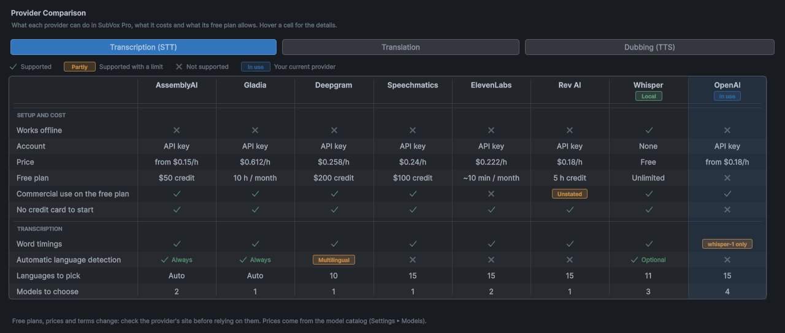
ヒント： OpenAIのgpt-transcribeは、単語のタイムスタンプを含まないテキストを返します。タイミングはクリップ全体にわたって推定されます。タイミングが重要な場合は、ローカルでのアラインメントを使用するか、単語のタイムスタンプを提供するプロバイダーを使用してください。
文字起こしは、AUDIOセレクターで選択されたオーディオに対して行われるため、吹き替え音声も文字起こしできます。
翻訳

- 「Provider」を選択します。DeepL、Google Translate、OpenAI、Claude、Gemini、DeepSeek、またはオフライン版のHy-MT2を選択できます。
- 「Target」で翻訳先の言語を選択するか、プリセットを選択して複数言語の翻訳を一度に作成します。
- その言語で設定できる場合は、「Formality」で文体の丁寧さ（二人称の丁寧な表現またはくだけた表現）を設定します。
- 「Translate」をクリックします。言語ごとに個別のトラックが作成されます。SUBTITLESセレクターで切り替えられます。
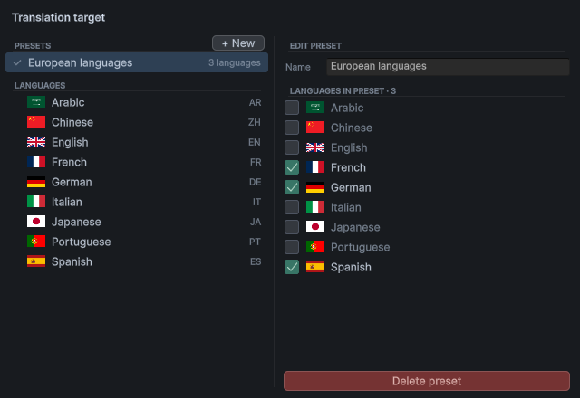
「Target」ポップアップではプリセットも編集できます。「+ New」でグループを作成し、右側の列でそのグループに含める言語を選択します。そのプリセットを選択すると、1回の操作でプリセットに含まれるすべての言語に翻訳されます。
翻訳に役立つ情報の追加。曖昧な字幕は、コンテキストがあると翻訳の質が向上します。吹き出しボタンからボイスライン全体のコンテキストを入力し、必要に応じて個々の字幕にも注釈を追加します（リスト内の該当する字幕の吹き出しボタン）。
翻訳の同期。翻訳後に原文の字幕を変更すると、その翻訳には「OUT」バッジが表示されます。「Synchronize」をクリックすると、原文が変更された字幕のみが再翻訳されます。または、字幕を確認した後でバッジをクリックします。マーカーを移動して文の区切り位置を変更すると、翻訳された字幕に「CUT」バッジが表示されます。「Fix splits」では、AIプロバイダーに、単語を変更せずに原文の区切りに意味上対応する位置で翻訳を分割するよう依頼します。吹き替え音声も、変更後の区切りに自動的に合わせられます。
音声合成による吹き替え

- SUBTITLESセレクターで吹き替えに使用する言語を選択します。
- AI Tools ▸ Dubbingで、ProviderとVoiceを選択します。ボイスの横にある▶ボタンをクリックすると、サンプル音声が再生されます。 Use speakers' voicesを有効にすると、各字幕にその話者のボイスが使用されます。
- Generationモードを選択します。
- Each subtitle — 字幕ごとに1テイク生成します。字幕単位で最も修正しやすい方式です。
- Per speaker — 同じキャラクターの字幕をまとめて、グループごとに1テイク生成します。より自然な流れになります。
- All together — 全体を1つの連続したテイクとして生成します。最も自然な仕上がりになりますが、再生成する場合は全体がやり直しになります。
- Groups — どの単語を1つのテイクで読み上げるかを指定します（下記参照）。
- Generate audioをクリックします。吹き替え音声が新しいオーディオトラックとして追加され、その言語がアクティブなときに、元の音声の代わりに再生されます。
グループモード。 Groupsを選択すると、波形の上にあるGroupsツールが有効になります。各グループは、最初の単語に設定されたボイスと音声演技プリセットを使って1つのテイクとして読み上げられ、字幕テキストはグループの色で表示されます。最初は、 1つのグループにすべてが含まれています。グループ内をドラッグすると3つに分割され、新しいグループが中央に配置されます。グループの開始位置や終了位置は字幕の途中にも設定でき、新しいグループにはそれぞれ独自の色が割り当てられます。2つのグループ間の境界線をドラッグすると移動できます。境界線を隣のグループ全体を越えるまで移動すると、そのグループが削除されます。マウスボタンを離す前にドラッグして戻すと、そのグループが復元されます。グループを右クリックすると削除され、隣接するグループがその範囲を引き継ぎます。ゴミ箱ボタンをクリックすると、すべてが再び1つのグループに統合されます。グループは字幕の言語ごとに保存されます。
プロバイダー：InWorld、ElevenLabs、Gemini、OpenAI、Google Cloud、Azure、およびオフラインで利用できるKokoro（英語）、 Chatterbox（21言語、各キャラクターの声を維持）、Qwen3 TTS 1.7B（10言語、参照音声によるボイスクローニング、固定ボイス、ボイスデザイン）、VoxCPM2（30言語、文章によるスタイル指定を併用できる参照音声によるボイスクローニング、ボイスデザイン）。
- Word timing — 単語を発話のタイミングに合わせて正確に表示するには、Qwen3 aligner (local)のままにします（初回のみインストール）。字幕を単語ごとに表示しない場合は、Estimatedに設定します。
- Voice direction — 対応しているプロバイダーでは、ボイスの横にある吹き出しボタンで演技のトーンを指定します（例： 落ち着いた口調、ささやき声）。
- REGEN — 字幕の吹き替え音声が現在の設定と一致しなくなると（テキスト、ボイス、音声演技プリセットの変更など）、その字幕にオレンジ色のREGENチップが表示されます。カーソルを合わせると理由を確認でき、クリックすると必要な部分のみを再生成できます。
- ボイスクローニング — ElevenLabs（有料プラン）、Chatterbox、Qwen Base、VoxCPM2では、Original voiceを選択すると、ソース音声から声をクローンし、各キャラクターをそれぞれの声で吹き替えられます。また、データフォルダー内の
Voicesフォルダーに配置したクリップから声をクローンすることもできます。使用する権利のある声のみをクローンしてください。
OpenAIなど一部のサービスでは、音声がAIで生成されたものであることをプレイヤーに開示する必要があります。詳しくは Provider Setupを参照してください。
話者と音声演技プリセット
話者
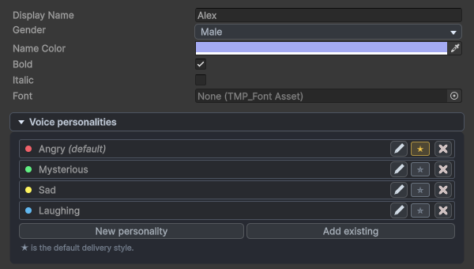
話者とはキャラクターのことです。字幕の前に話者固有の色で表示する名前と、吹き替え用のボイスを設定します。Assets ▸ Create ▸ SubVox Pro ▸ Speakerから、またはウィンドウ内の話者ピッカーで作成します。
- ボイスライン全体の話者はリスト上部のSpeakerフィールドで、個々の字幕の話者はその行で設定します。
- 話者のInspectorでは、Text-to-speech voicesでプロバイダーごとにボイスを選択し、すべての言語で使用するフォールバックのボイスと、必要に応じて言語ごとの上書き設定を指定します。
- Subtitle Displayer（またはSubtitle Document Displayer）では、Speaker Name Modeで名前を字幕の前に表示する（Inline）、字幕の上に表示する（Above）、表示しない（Hidden）のいずれかを選択します。話者ごとに独自のフォントも設定できます。Font (TextMeshPro)はSubtitle Displayer用、Font (UI Toolkit)はSubtitle Document Displayer用です。
- Keep Background Between Subtitlesを有効にすると、2つの字幕の間の空白区間では字幕パネルのみが表示されます。デフォルトで有効ですが、最初の字幕の前や最後の字幕の後の空白区間では、パネルも非表示になります。

話者ピッカーでは、キャラクターが性別ごとにグループ分けされています。鉛筆アイコンで既存の話者を編集し、New speakerで新しい話者を作成します。字幕ごとの上書き設定では、一番上の項目を選択すると、そのボイスラインのデフォルトの話者に戻ります。
音声演技プリセット
音声演技プリセットとは、再利用可能な演技指示のことです。怒り、ミステリアス、ささやきなどがあります。話者の（New personality）から、またはAssets ▸ Create ▸ SubVox Pro ▸ Voice Personalityで作成し、演技指示を自分で記述するか、感情、話すテンポ、音量、話し方を組み合わせて設定します。アイコンをクリックすると、約40種類のシンボル（感情、ムード、声、キャラクター）から1つを選択でき、リスト内で一目で識別できるようになります。
リスト内のチップから各字幕に音声演技プリセットを割り当てるか（Each subtitleモードの場合）、話者のデフォルト設定を使用します。各プロバイダーは、対応できる範囲で設定を適用します。指示をすべて反映するものもあれば、話すテンポのみを反映するものもあります。チップのツールチップには、選択したボイスで実際に反映される設定が表示されます。
オーディオの編集
タイムラインツールバーの右側にあるボタンで、オーディオ自体を編集できます。すべての編集は Ctrl+Z で元に戻せます。

Audio effects ボタンをクリックすると、エフェクトリストが開きます。適用済みのエフェクトが最初に表示されます。編集したいエフェクトを選択するか、 ×マークをクリックしてリセットし、削除します。
- Crop — 開始点と終了点のハンドルをドラッグし、Apply crop をクリックします。ソースのオーディオファイルが上書きされるため、テイク全体が必要になる可能性がある場合は、そのコピーを保存しておいてください。
- 無音区間の挿入／セグメントの削除（
|↔|ボタン） — マウスの左ボタンを押しながらドラッグすると無音区間を挿入し、右ボタンを押しながらドラッグすると区間を削除します。その位置より後の字幕、単語、イベントはオーディオに合わせて移動します。TTSの音声が2つの文をつなげて読み上げる場合に便利です。 - Audio effects — 音量カーブ、フェード、ノーマライズ、コンプレッサー、リミッター、ノイズゲート、フィルター、イコライザー、電話・無線風エフェクト、ピッチ、イントネーション、パン、距離による音のこもり、ルームリバーブ。タイムライン上でエフェクトを適用する範囲を描画し、スライダーで適用方法を設定してから、Apply effects をクリックします。カーブの隅にある磁石アイコンは、ポイントを基準値、0、および隣接するポイントに揃えます（Alt キーを押しながらポイントを自由に配置できます）。SubVox Proは元のオーディオを保持するため、エフェクトは引き続き編集できます。 Flatten を選択するとエフェクトが確定され、Discard を選択するとすべてのエフェクトが削除されます。
- Intonation — 声の高さの変化が上部に表示されます。下のレーンで、ピッチをどの程度上げる（+）か下げる（−）かを描画します。0 では元のままです。磁石アイコンは、その隣にある設定値の刻みに合わせて描画した線をスナップさせます（デフォルトは0.5 st。Alt キーを押しながら自由に描画できます）。波アイコンは、設定した時間幅で新しく描画する線を滑らかにします（0ではなぞったとおりに描画されます）。マウスの右ボタンを押しながらドラッグすると元の声に戻り、Esc キーで描画中の線をキャンセルできます。ボイスラインのほかの部分は変更されません。 Pitch は区間全体のピッチを変更し、同じ声の高さの変化を表示します。どちらも声の自然さを保ちます。変更幅は数半音（st）程度が最適です。Engine のドロップダウンメニューでは、WORLD（自然、デフォルト）、PSOLA（軽量）、Classic（最速。声質も変化します）を選択できます。

上の音量カーブは、選択した区間の音量だけを下げます。波形でタイミングを確認しながら、各ポイントでゲインを制御します。0 dB では、元の音量は変更されません。
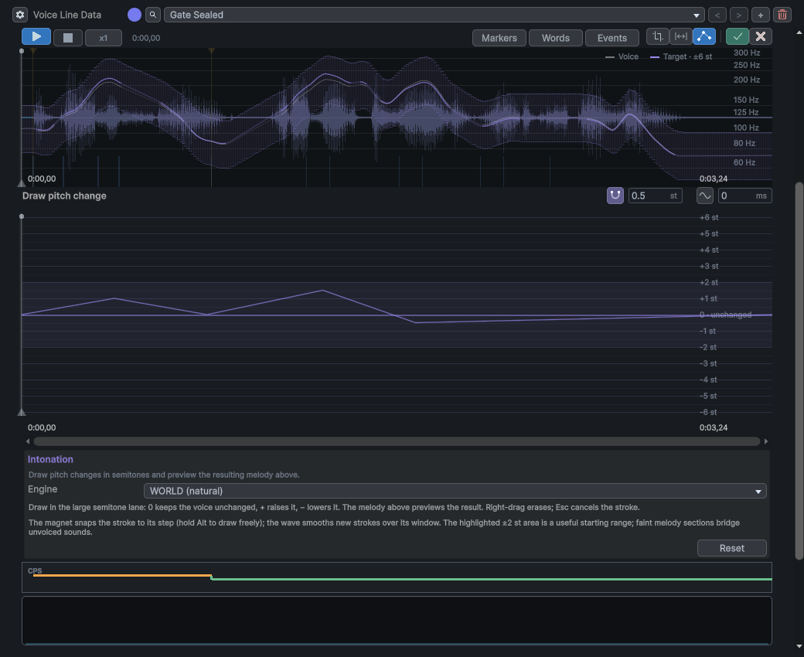
Intonation では、上部のカーブが検出した声の高さの変化を示しています。下のレーンは、半音単位での変更内容を示します。正の値はピッチを上げ、負の値は下げ、ゼロでは元のままです。2つが分かれているため、元の声の高さの変化と、加えている変更を確認できます。
ゲーム内でボイスラインを再生する
シーンの設定
[SubVox Pro] プレハブ（
SubVoxPro/Prefabs）を起動シーンに1つドラッグ＆ドロップします。ボイスラインの再生と、それに関するイベントの発行を担当します。（配置を忘れた場合は、初めてボイスラインが再生される際にデフォルトのプレーヤーが作成され、警告が表示されます。）Subtitle Displayer プレハブ（
SubVoxPro/Prefabs）をシーンにドラッグ＆ドロップします。これは画面下部に表示される既製の字幕ボックスで、長い字幕ではサイズが拡大し、字幕の合間には非表示になります。スタイル（フォント、色、位置、サイズ）を自由に変更できます。または、独自のCanvasに Subtitle Displayer コンポーネントを追加し、Subtitle Text （および、字幕の合間に背景を非表示にするための Background）を割り当てます。Canvasの代わりにUI Toolkitを使用していますか？その場合は、Subtitle Document Displayer プレハブをドラッグ＆ドロップします。 UI Toolkitドキュメント内で、同じ字幕、話者名、スタイルが表示されます。
Subtitle Document.uss（SubVoxPro/Prefabs/UI/UI Toolkit）でスタイルを変更できます。または、独自のUI Documentに Subtitle Document Displayer コンポーネントを追加し、字幕を表示するLabelの名前（および字幕の合間に非表示にする要素の名前）を指定します。
コードからボイスラインを再生する
すべての操作は SubVox を通じて行います。一般的な用途（ボイスラインの終了待ち、イベントへの反応、言語選択メニュー、オプションメニュー、会話ログ、動画の字幕など）向けの、そのままコピーして使えるスクリプトは SubVoxPro/Example/Snippets にあります。コードエディタでは、入力中にすべてのクラス、メソッド、設定の説明が表示されます。完全なスクリプトリファレンスは、このガイドと同じサイトで公開されており、SubVox Proの各バージョンに対応するページが用意されています：
https://exnihilus.github.io/subvoxpro-docs/（Hubの Documentation ▸ Online からもアクセスできます）。
using SubVoxPro;
SubVox.Play(myVoiceLine); // plays, with synced subtitles
SubVox.PauseAll(); // game paused
SubVox.ResumeAll();
SubVox.StopAll(); // cutscene skipped
SubVox.CurrentLanguage = "fr"; // French subtitles and dubs ("" = original)
Play はボイスラインの再生を表すオブジェクトを返します。State、Time、Progress を確認したり、一時停止や停止を行ったり、
Completed / Interrupted イベントを監視したり、コルーチンで再生の終了を待ったりできます：
yield return SubVox.Play(greeting); // waits until the line is over
yield return SubVox.Play(answer);
SubVox.IsPlaying(line) は、そのボイスラインが現在再生中かどうかを示します。SubVox.Stop(line) はそのボイスラインだけを停止します。
SubVox.PlayAt(line, position) は、拡声器から流れる声のように、ワールド内の指定した位置でボイスラインを1回再生します。別の場所（動画やメニューなど）で字幕を表示する場合は、myVoiceLine.GetSubtitleAt(time, language) で任意の時点の字幕を取得し、
TryGetWordAt でその時点で読み上げられている単語を取得できます。
Voice Line Manager の Subtitle Reveal Mode で、字幕を1行ずつ一括表示（デフォルト）、単語ごとに表示、または Karaoke（字幕全体を表示し、読み上げ中の単語をハイライト表示）を選択できます。Timelineのカットシーンもこの設定に従います。誰かが話している間に音楽の音量を下げるには、Audio Mixerの2つのスナップショットを Ducked Snapshot（音楽の音量を下げた状態）と Normal Snapshot に割り当てます。
3D音声と複数の音声の同時再生
話す各キャラクターに Voice Line Emitter を追加し、そのAudioSourceを3Dに設定します。音声がキャラクターの位置から聞こえるようになり、複数のキャラクターが同時に話せます。
npc.GetComponent<VoiceLineEmitter>().Play(barkLine, EVoiceLinePriority.Low);
優先度により、重要なボイスラインの再生が保護されます。1つのエミッターでは、新しいボイスラインの優先度が再生中のボイスラインと同等以上の場合にのみ、新しいボイスラインに切り替わります。画面上では、優先度が最も高いボイスラインの字幕が表示されます。ボイスラインを順番待ちさせるには、
EVoiceLinePlayMode.Queue で再生します。EVoiceLinePlayMode.IfIdle では、エミッターが何も再生していない場合にのみ再生します。
Skip() は、「セリフをスキップ」ボタンのように再生中のボイスラインを即座に終了させ、ClearQueue() は順番待ち中のボイスラインをキューから削除します。背景の会話では、エミッターの Show Subtitles をオフにできます。VoiceLineCompleted /
VoiceLineInterrupted イベントは、それぞれボイスラインの正常終了／中断を通知します。Paused / Resumed は一時停止／再開を通知します。PlaybackSpeed でボイスラインの再生速度を速めたり遅くしたりできます。
リップシンク。エミッターの WordChanged イベントは、新しい単語が話されるたびに（および単語と単語の間にも）発生し、
CurrentWord は現在話されている単語を保持します。これらの情報を使って、キャラクターの口を開けたり、ジェスチャーをトリガーしたりできます。
emitter.WordChanged += word => mouth.SetBool("Talking", word.Text != null);
吹き出し。キャラクターを選択し、GameObject ▸ SubVox Pro ▸ Subtitle Bubble を選択します。そのキャラクターの頭上に吹き出しが表示され、そのキャラクターの発言のみが表示されます。これらの字幕を画面下部に表示しないようにするには、エミッターの Show Subtitles をオフにします。
コード不要
- Voice Line Zone — プレイヤーがトリガー（2Dまたは3D）に入ると、1回だけ、またはクールダウン時間を挟んでボイスラインを再生します。キャラクターが話し終わるまで待機する（Play mode: Queue）、プレイヤーが離れると再生を停止する、次にプレイヤーが入ったときに再度再生するといった動作に対応します。
- Voice Line Play On Start — オブジェクトの開始時にボイスラインを再生します。必要に応じて遅延時間を設定できます。
- Voice Line Bank（Assets ▸ Create ▸ SubVox Pro ▸ Voice Line Bank）— 警備員の短いセリフなど、複数のボイスラインから選択するためのアセットです。同じものが連続しないランダム順、シャッフル順、またはリスト順で選択できます。ゾーンまたはPlay On Startの Bankフィールドに設定します。
- Voice Line Sequence（Assets ▸ Create ▸ SubVox Pro ▸ Voice Line Sequence）— 会話を構成するボイスラインのリストです。自動的に、または
Advance()を呼び出すと、順次再生されます。Previous()は1つ前のボイスラインに戻るため、「前のセリフ」ボタンに使用できます。Voice Line Sequence Playerで再生し、そのInspectorでPlay mode中の進行状況を確認できます。DirectionをBackwardに設定すると、最後から最初へ逆順に再生されます。キャラクターが優先度の高い別のボイスラインを再生中の場合、会話は待機し、短いResume Delayの後に再開します。
それぞれにEmitter（空の場合はデフォルトのemitter）とPriorityがあり、ボタンや任意のUnityEventから呼び出せるパブリックなPlay()が用意されています。
言語の切り替え
言語を変更すると、画面上の字幕が即座に切り替わります。吹き替え音声は次のボイスラインから切り替わります。文の途中で再生中のボイスラインの言語を変更することはできないためです。
- Unity Localization — プロジェクトでUnityのLocalizationパッケージを使用している場合、SubVox Proはそこで選択された言語を自動的に反映します。手動で言語を設定するには、Voice Line ManagerのLanguage SourceをManualに設定します。
- Speaker名 — 話者の名前は言語ごとに変更できます。Localized Namesに入力するか、 Unity Localizationを使用する場合は、Localization TableとLocalization Entryで参照する文字列を指定します。
- 関連言語 — プレイヤーの言語が
pt-BRで、pt-BRの翻訳がない場合は、ptの翻訳が再生・表示されます（逆も同様です）。 - 言語選択メニュー —
myVoiceLine.GetSubtitleLanguages()とGetAudioLanguages()で、そのボイスラインで利用可能な言語の一覧を取得できます。
プレイヤー向けの字幕オプション
以下の設定をオプションメニューに組み込むと、すべての字幕表示に即座に反映されます。
SubVox.SubtitlesEnabled = false; // no subtitles (voices carry on)
SubVox.SubtitleScale = 1.5f; // bigger text
SubVox.BackgroundOpacity = 1f; // opaque box behind the text
SubVox.FadeDuration = 0.2f; // subtitles fade in and out
SubVox.RevealMode = EVoiceLineSubtitleRevealMode.Karaoke; // whole line, spoken word highlighted
SubVox.Historyは最近表示された字幕（テキスト、話者）を保持し、会話ログ画面の作成に使用できます。
独自の字幕表示
字幕表示コンポーネントは、ほとんどの用途に対応できます。独自の方法で字幕を表示するには、
SubVox.SubtitleUpdatedを購読します。字幕が変更されるたびに、表示する字幕が通知されます（空のテキストは「表示を消去する」という意味です）。購読した直後にSubVox.CurrentSubtitleを読み取ると、すでに再生中のボイスラインの字幕も表示できます。組み込みの字幕表示コンポーネントは、有効化または再有効化された際にこれを自動的に行います。吹き出しの場合は、自身のemitterの現在の字幕を読み取ります。
SubVox.DisplayedVoiceLineで、共通の字幕表示用に選択されているボイスライン（Timelineクリップを含む）を取得できます。
SubVox.PublishSubtitle(...)を使うと、例えば動画再生中に、字幕表示コンポーネントに独自のテキストを表示できます。独自の表示要求は、SubVoxのTimelineクリップがアクティブな間は無視されます。そのクリップが字幕表示を管理しているためです。
字幕表示コンポーネントを微調整するだけの場合（テキストの変更やボックスのアニメーションなど）は、そのコンポーネントを継承するスクリプトを作成し、
ComposeTextまたはSetVisibleをオーバーライドします。他のコンポーネントも同じ方法で拡張できます。
FMOD、Wwise、または動画を使用したオーディオの再生
ボイスラインのオーディオ（およびその吹き替え音声）を通常どおりオーディオツールにインポートし、emitterが自ら再生する代わりに、そのオーディオの再生に追従するようにします。
class FmodClock : IVoiceLineAudioClock
{
public FMOD.Studio.EventInstance Instance;
public float Time { get { Instance.getTimelinePosition(out int ms); return ms / 1000f; } }
public bool IsPlaying { get { Instance.getPlaybackState(out var state); return state != FMOD.Studio.PLAYBACK_STATE.STOPPED; } }
}
emitter.PlayExternal(myVoiceLine, clock); // subtitles and events follow your audio
// then start the audio of emitter.CurrentAudioLanguage ("" = original, otherwise that dub)
emitterの一時停止や停止は、字幕とイベントにのみ影響します。オーディオも同様に一時停止または停止してください。
ボイスラインからゲームプレイをトリガーする

「走れ！」というセリフでドアを開けたり、悲鳴でカメラを揺らしたりできます。イベントはボイスライン内の特定のタイミングで発火します。
- タイムラインをEventsに切り替え、+ Eventをクリックします（または波形上でマウスの中央ボタンをクリックします）。
- シグナルを指定します。これは、Camera Shakeなど、イベントに名前を付ける小さな再利用可能なアセットです。
- 発火するタイミングを選択します。音声の開始時または終了時、特定のtime（時刻）、あるいは字幕やword（単語）に合わせて発火できます（単語に合わせた場合は、タイミングが変更されてもその単語に追従します）。ひし形をドラッグして位置を調整します。
その後、以下の3つの方法のいずれかでイベントに応じた処理を実行します。
コード不要 — オブジェクトにVoice Line Event Receiverを追加し、シグナルを選択してUnityEventを接続します。
属性 — MonoBehaviourの任意のメソッドに、生成されたシグナル定数を指定した属性を付けます（定数はシグナルのInspectorでコピーできます）。
[VoiceLineEvent(SubVoxEvents.CAMERA_SHAKE)] private void Shake() { // ... }シグナルの任意設定項目Categoryを、
/で区切られた階層（例：Camera/Effects）に設定すると、SubVoxEvents.Camera.Effects.CAMERA_SHAKEが生成されます。定数は、シグナルが保存、名前変更、作成、または削除された際に再生成されます。キーやカテゴリの名前を変更すると、古い参照は意図的にコンパイルエラーになります。[VoiceLineEvent("Camera Shake")]のような文字列キーは引き続きサポートされます。定数はデータフォルダー（
Generated/SubVoxEvents.g.cs）内に保存されるため、プラグインの更新によって上書きされることはありません。アセンブリ定義のないスクリプトは、これらの定数を直接参照できます。スクリプトにアセンブリ定義がある場合は、 SubVoxPro.Eventsへの参照を追加します。[SubVox Pro]プレハブは、これらのメソッドを自動的に検出します。実行時にオブジェクトを作成する場合は、そのオブジェクトから
VoiceLineEventDispatcher.Register(this)を呼び出します。非常に大規模なシーンでは、ディスパッチャーの Scan Scenes Automaticallyのチェックを外し、オブジェクトを手動で登録することもできます。C# —
SubVox.Subscribe(signal, MyMethod)は、そのシグナルが発火するたびにメソッドを呼び出します（停止するにはSubVox.Unsubscribeを使用します）。
イベントにはPayload（イベントとともに渡される任意のアセット）を付加することもできます。そのアセットと同じtype（型）のパラメータを持つメソッドで受け取れます。また、再生1回につき1度に制限することもできます。イベントはPlay modeでのみ実行され、編集中やスクラブ中は実行されません。
Unity Timeline
- Timelineで「Add ▸ Voice Line Track」を選択します。
- ボイスラインをそのトラックにドラッグします。字幕クリップが作成され、そのオーディオは別の Voice Line Audio トラックに配置されます。
- 他のAudio Trackと同様に、そのオーディオトラックをAudioSourceにバインドします。
- シーンにSubtitle Displayerがあることを確認します（プレハブを使用するのが最も手早い方法です）。
スクラブ中も、オーディオと字幕は同期します。「Voice Line Sequence」をドロップすると、その中のすべてのボイスラインが配置されます。ボイスラインのイベントは再生中に発生します。これらをTimelineのマーカーに変換するには、クリップを右クリックし、「SubVox Pro ▸ Bake Voice Events to Timeline」を選択します。
カットシーンでは、ボイスラインに現在の言語の吹き替え音声がある場合、その音声が再生され、字幕も同期して表示されます。言語は Timelineの再生開始時に選択されます。クリップはマネージャーの「Subtitle Reveal Mode」に従いますが、そのクリップで「Override Reveal Mode」にチェックを入れると、この設定を上書きできます。
アクティブなSubVoxクリップは、共通の字幕表示において優先されます。他のボイスラインは再生され続けますが、その字幕がクリップのテキストを置き換えることはありません。空白区間や、最初の字幕が表示される前も同様です。クリップ内の空白区間には、通常どおり「Keep Background Between Subtitles」の設定が適用されます。
クリップが終了するかディレクターが停止すると、再生中のemitterのうち優先度が最も高いものの字幕に直ちに切り替わり、その時点の再生位置に対応する字幕が表示されます。オーディオが最初から再生し直されることはありません。再生中のemitterがない場合、パネルは非表示になります。複数のSubVox Timelineトラックやディレクターの再生が重なる場合、最も直近に再生区間に入ったクリップが優先されます。別のクリップが終了しても、優先されているクリップの字幕は消えません。ディレクターを一時停止すると、再生が再開されるかディレクターが停止されるまで、選択された字幕が保持されます。
複数のファイルを一度に処理する
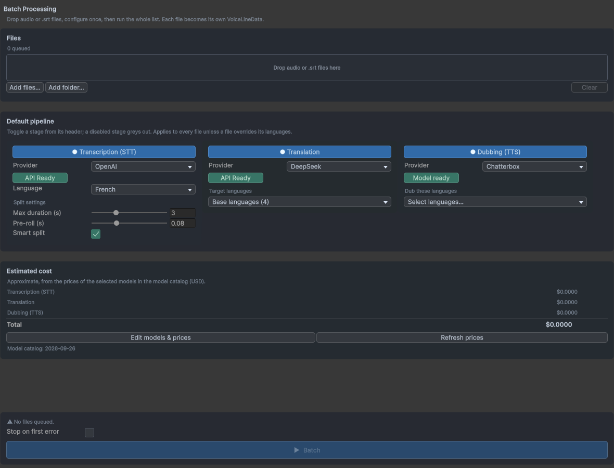
「Tools ▸ SubVox Pro ▸ Batch Processing」を使用すると、オーディオファイルまたは.srtファイルのリストを、一度にボイスラインに変換できます。
プロジェクト内にすでにあるオーディオファイルをキューに追加するには、複数のオーディオファイルを選択し、右クリックして「SubVox Pro ▸ Batch Processing」を選択します。バッチ処理は開始されず、ファイルが既存のキューに追加されます。重複するファイルは無視されます。この方法でファイルを追加する場合は、実行中のバッチ処理が終了するのを待ってください。
- ファイルをドラッグ＆ドロップするか、「Add files…」/「Add folder…」を使用します。
- 必要なステップ（「Transcription」、「Translation」、「Dubbing」）を有効にし、すべてのファイルに共通の設定を一度行います。言語設定はファイルごとに上書きできます。
- 「Estimated cost」を確認し、「Batch」をクリックします。すべての準備が整うまでボタンはグレーアウトされ、不足している項目が表示されます。
各ファイルから個別のボイスラインが作成されます。バッチ処理では、次のステップに進む前に、すべてのファイルに対して1つのステップを実行します（例えば、すべての文字起こし、次にすべての翻訳、その次にすべての吹き替え）。これにより、オフラインエンジンでの処理が高速化されます。いつでもキャンセルでき、実行レポートをエクスポートすることもできます。「Batch」を再度クリックすると、各ファイルが中断した箇所から処理が再開されます。
オフラインエンジン（アカウント不要、API key不要）
WindowsのUnityエディターでは、SubVox Proのすべての処理を、お使いのマシン上でオフラインかつ無料で実行できます。各エンジンは一度ダウンロードするだけで（プロバイダーの横のボタンには「Setup model」または「Install…」と表示されます）、すべてのプロジェクトで共有されます。「Tools ▸ SubVox Pro ▸ Additional Models」（Hubのタイルからも開けます）では、すべてのエンジンが1つのウィンドウに一覧表示され、各エンジンのステータスと「Download」ボタン、ディスク容量を解放するための「Uninstall」ボタンを確認できます。グラフィックスカードがあると処理速度が大幅に向上しますが、なくても動作します。
| エンジン | 機能 | ダウンロード容量 | 対応言語 |
|---|---|---|---|
| Whisper | 文字起こし | 1.6 GB（より大規模なモデルでは最大3.1 GB） | 多数の言語（自動検出に対応） |
| Parakeet | 文字起こし（グラフィックスカードがなくても高速） | 670 MB | ヨーロッパの25言語（自動検出） |
| Hy-MT2 | 翻訳 | 1.1 GB、またはより高精度なモデルでは4.6 GB | 50の翻訳先言語のうち37言語（対象外：デンマーク語、スウェーデン語、フィンランド語、ノルウェー語、ギリシャ語、ハンガリー語、ルーマニア語、ブルガリア語、スロバキア語、スロベニア語、エストニア語、ラトビア語、リトアニア語） |
| Kokoro | 吹き替え | 370 MB | 英語（米国および英国のボイス） |
| Chatterbox | 吹き替え（各キャラクター固有の声、または20種類のプリセットボイス） | 3.3 GB | 21言語＋オプションの6 MBアドオンで日本語に対応 |
| Qwen3 TTS 1.7B | 吹き替え（クローンボイス、プリセットボイス、または説明文で指定したボイス） | モデルごとに2.4 GB | 10言語 |
| VoxCPM2 | 設定したパーソナリティに従うクローンボイスによる吹き替え | 3.6 GB | 30言語 |
| Qwen3 Aligner | 文字起こしと吹き替え音声の正確な単語タイミング | 1.0 GB | 11言語 |
Whisper（オフライン文字起こし）
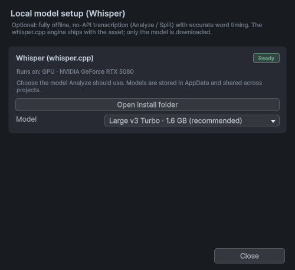
「Transcription」タブで「Whisper」を選択し、「Setup model」をクリックします。推奨モデルは「Large v3 Turbo」です。高速で、フルサイズのモデルとほぼ同等の精度が得られます。グラフィックスカードがあれば、短いボイスラインの文字起こしは約 1秒で完了します。
Parakeet（オフライン文字起こし、ヨーロッパ言語）
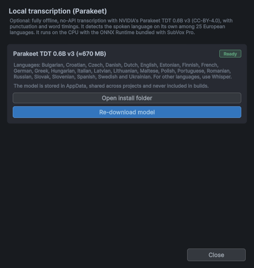
「Transcription」タブで「Parakeet」を選択し、「Setup model」をクリックします（670 MB）。NVIDIAのParakeet TDTは、句読点付きのテキストと単語のタイミング情報を生成し、話されている言語を自動的に認識するため、設定は不要です。グラフィックスカードがなくても、最近のプロセッサであれば高速に処理できます。短いボイスラインは1秒未満、2分間の音声でも数秒で文字起こしが完了します。対応言語：ブルガリア語、クロアチア語、チェコ語、デンマーク語、オランダ語、英語、エストニア語、フィンランド語、フランス語、ドイツ語、ギリシャ語、ハンガリー語、イタリア語、ラトビア語、リトアニア語、マルタ語、ポーランド語、ポルトガル語、ルーマニア語、ロシア語、スロバキア語、スロベニア語、スペイン語、スウェーデン語、ウクライナ語。その他の言語にはWhisperを使用してください。
Hy-MT2（オフライン翻訳）

「Translation」タブで「Hy-MT2」を選択し、「Setup model」をクリックします。「1.8B」モデルはどのマシンでも高速に動作します。「7B」モデルはコンテキストの補足情報をより正確に反映し、8 GBのメモリを搭載したグラフィックスカードでの使用が最適です。どちらのモデルもコンテキストの補足情報と文体の丁寧さの設定に従います。
Kokoro（オフライン英語吹き替え）
「Dubbing」タブで「Kokoro」を選択し、「Install Kokoro…」をクリックします。11種類の英語ボイスが付属しています。
Chatterbox（21言語対応のオフライン吹き替え）

「Dubbing」タブでChatterboxを選択し、Install Chatterbox…をクリックします。利用できるボイスは次のとおりです。
- Original voice（デフォルト） — どの言語でも、各キャラクターは元の音声の声を維持します。
- 付属の20種類のボイス（10言語それぞれに女性ボイスと男性ボイスを1種類ずつ） — 合成音声で、商用利用も無料です。Qwen3やVoxCPM2の付属ボイスと同じです。
- Chatterbox default voice
- 自分のオーディオクリップ — データフォルダー内の
Voicesフォルダーに配置した任意のクリップ（1人の声だけが明瞭に録音された5～10秒の音声）。
対応言語：アラビア語、中国語、デンマーク語、オランダ語、英語、フィンランド語、フランス語、ドイツ語、ギリシャ語、ヒンディー語、イタリア語、韓国語、マレー語、ノルウェー語、ポーランド語、ポルトガル語、ロシア語、スペイン語、スワヒリ語、スウェーデン語、トルコ語。日本語も、同じウィンドウからサポートをインストールすると利用できます。「Dubbing」パネルのプロバイダーの下にあるExaggerationで、話し方の表現力を調整できます。「Batch Processing」と「Settings」にも同じ項目があります。生成結果は毎回わずかに異なります。単語がうまく発音されない場合は、もう一度生成してください。生成の安定性は言語によって異なります。 各言語の生成の安定性を参照してください。
Qwen3 TTS 1.7B（オフライン多言語吹き替え）
「Dubbing」タブでQwen3 TTS 1.7Bを選択し、Install…をクリックします。対応言語は中国語、英語、日本語、韓国語、ドイツ語、フランス語、ロシア語、ポルトガル語、スペイン語、イタリア語です。3種類のモデルが用意されているので、必要なものをインストールしてください（各約2.4 GB）。
| モデル | ボイス | 音声演技プリセットと演技の修正指示 |
|---|---|---|
| Base - Voice Cloning | Original voice、20種類の付属ボイス（各言語につき女性ボイスと男性ボイス各1種類）、Voicesフォルダー内のクリップ |
反映されません。参照音声の話し方を維持します |
| Custom Voice - 9 Preset Voices | Vivian、Serena、Uncle Fu、Dylan、Eric、Ryan、Aiden、Ono Anna、Sohee | 反映されます |
| Voice Design - Text Description | 言葉で特徴を説明して作成するボイス | 反映されます |
- Baseは声をクローンします。付属ボイスは合成音声で、商用利用も無料です。自分の声をクローンするには、ボイス選択メニューでRecord a reference…を選択し、静かな部屋で画面に表示されるテキストを8～12秒間読み上げます。
- Custom Voiceのボイスは対応するすべての言語を話せますが、それぞれのボイスの元の言語のアクセントがわずかに残ります。
- Voice Design：各キャラクターの声の特徴（年齢、音色、アクセントなど）を、その話者アセットの Voice description欄に記述し、Use speakers' voicesを選択します。ボイスライン全体で1つのボイスを使う場合は、代わりに「Dubbing」パネルに説明を入力します。同じ説明でも、テイクごとに声がわずかに異なる場合があります。同じ声を維持する必要がある場合は、Baseを使用してください。
「Settings」でUse GPUを有効にすると、グラフィックスカードを利用して生成を高速化できます。
VoxCPM2（スタイル制御付きオフラインボイスクローニング）
「Dubbing」タブでVoxCPM2を選択し、Install…をクリックします（3.6 GB）。VoxCPM2は声をクローンし、音声演技プリセットや演技の修正指示にも従います。対応する30言語は、アラビア語、ビルマ語、中国語、デンマーク語、オランダ語、英語、フィンランド語、フランス語、ドイツ語、ギリシャ語、ヘブライ語、ヒンディー語、インドネシア語、イタリア語、日本語、クメール語、韓国語、ラオ語、マレー語、ノルウェー語、ポーランド語、ポルトガル語、ロシア語、スペイン語、スワヒリ語、スウェーデン語、フィリピノ語、タイ語、トルコ語、ベトナム語です。
利用できるボイスはQwen3 Baseと同じです。Original voice、20種類の付属ボイス、Voices
フォルダー内のクリップ、またはRecord a reference…で録音した参照音声を使えます。演技指示は英語または中国語で入力してください。例えば、Speak softly, with a sad toneやWhisper quietlyです。セリフの言語にかかわらず、この2言語で指示すると最も効果的です。付属ボイスは、元の言語以外ではわずかなアクセントが残ります。吹き替え先の言語に正確に合ったアクセントにするには、その言語で録音された参照音声を使用してください。「Settings」でUse GPUを有効にすると、グラフィックスカードを利用して生成を高速化できます。
実在しない声を作成するには、Designed voiceを選択し、声の特徴を説明します。例えば、A deep, calm male voice in his fiftiesと入力します。ボイスは最初の生成時に作成され、以降のすべてのボイスラインで維持されるため、キャラクターの声は常に同じになります。声の調子は、引き続き音声演技プリセットで設定できます。キャラクターごとに異なるボイスを使う場合は、各話者に説明を入力し、ボイスをDesigned voiceに設定します。
Qwen3（オフラインの単語タイミング）
「Transcription」または「Dubbing」タブで、Word timingをQwen3 aligner (local)に設定し、Install…をクリックします。それ以降、文字起こし結果に対して Splitを実行するたびに、また吹き替え音声を生成するたびに、自動的に単語のタイミングが音声に合わせて調整されるため、単語ごとの字幕が音声と正確に同期します。調整されるのは単語のタイミングだけで、テキストは変更されません。対応言語は中国語、広東語、英語、フランス語、ドイツ語、イタリア語、日本語、韓国語、ポルトガル語、ロシア語、スペイン語で、最大5分間の音声を処理できます。
スクリプトが再コンパイルされるか、Playモードに入ると、ダウンロードが中断されます。同じウィンドウからもう一度開始すれば、中断した位置から再開されます。
Google Sheetsを使った人手による翻訳
共有のGoogleスプレッドシートで翻訳者にセリフを渡し、翻訳結果を取り込めます。やり取りは双方向で行えます。
設定（1回のみ）
- Google Cloud — https://console.cloud.google.comでプロジェクトを作成し、Google Sheets APIを有効にします。 OAuth consent screenでExternalを選択し、自分と翻訳者をTest usersとして追加します。次に、種類がDesktop appのOAuth client IDを作成し、Client IDとClient secretをコピーします。
- シート — 空のGoogleスプレッドシートを作成し、URLからID（
/d/と/editの間）をコピーして、翻訳者にEditor権限で共有します。 - Unity — Tools ▸ SubVox Pro ▸ Google Sheets Localizationを開き、3つの値を貼り付けて Connectをクリックし、ブラウザでサインインします。
日常の作業
翻訳者は各言語の列に翻訳を入力し、各行をreviewed（レビュー済み）またはfinal（確定済み）に設定します。Sync with Sheetをクリックすると、 SubVox ProがUnityとシートの内容を左右に並べてすべての相違点を表示し、書き込み前にどちらの内容を採用するかを選択できます。シートのキー列はロックされているため、翻訳者は翻訳内容だけを編集できます。ステータスは色分けされ（reviewedは琥珀色、finalは緑色）、空の翻訳欄にも色が付くため、残りの作業が一目でわかります。各ボイスラインの先頭には濃い色のタイトル行があり、左側の余白にある+ / −ボタンで、そのボイスラインに属する行を展開または折りたためます。
シートにのみ追加された行はインポートされません（字幕にはタイミング情報が必要なためです）が、確認なしに削除されることもありません。次の2種類の行はデフォルトでDropに設定されるため、1回の同期で整理できます。Duplicate（シート内に同じ行が重複しているもの）とRemoved（字幕の再分割後などに、 Unity内に存在しなくなった行）です。シートに残す場合は、Keepをクリックします。
「Spreadsheet ID」の横にあるボタンをクリックすると、ブラウザでシートが開きます。
設定

Tools ▸ SubVox Pro ▸ Settings：
- API Keys — サービスごとに1つのキーを使用します。キーはこのコンピューター内に保存され、プロジェクトへの保存、コミット、配布物への同梱は一切行われません。行の末尾にある目のアイコンでキーの表示／非表示を切り替え、赤い×マークで削除できます。
- Preferences — Show CPS（字幕の読み取り速度）、Custom inspectors、Auto blanks on new lines。
- Data folder — 新しいボイスライン、話者、吹き替え音声の作成先です。
- Cloud Model Catalog — クラウドAIモデルとその価格を表示し、オンラインで更新します。Manage modelsでは、まだ一覧にないモデルを追加できます。ローカルモデルはAdditional Modelsと各プロバイダーの操作機能を使って選択・インストールします。
- Local models & services — 各オフラインエンジンの状態（ReadyまたはNot installed）、オプション（グラフィックスカードの使用、Chatterboxの表現力）、インストールや設定を行うボタンが表示されます。また、 ElevenLabsのボイスクローンを整理・削除できます。
キーボードとマウス
SubVox Proウィンドウ内での操作（テキストフィールドへの入力中はショートカットが無効になります）：
| ショートカット | 動作 |
|---|---|
| Space | 再生ヘッドの位置から再生／一時停止 |
| ← / → | 選択したマーカー（または単語、イベント）を50 ms単位で移動 |
| Shift + ← / → | 選択したマーカーを前／次の単語にスナップ |
| Ctrl + ← / → | 前／次のマーカー（または単語、イベント）を選択 |
| Delete | 選択したマーカーまたはイベントを削除 |
| Ctrl + Z | 元に戻す |
| 波形上のマウス操作 | 動作 |
|---|---|
| クリック | 再生ヘッドを移動 |
| ドラッグ | マーカー、単語、イベントを移動 |
| 再生ヘッドの上端または下端をドラッグ | オーディオエフェクトの編集中に再生ヘッドを移動 |
| Shift + クリックまたは中央ボタンでクリック | マーカー（Eventsモードではイベント）を追加 |
| 右クリック | マーカーまたはイベントを削除 |
| スクロール / Ctrl + スクロール | ズーム／表示範囲の水平移動 |
波形の上にあるMarkers、Words、Eventsボタンで編集対象を選択します。リスト内で行をダブルクリックすると、その字幕が再生されます。
対応言語
✓ 利用可能 · ◐ 選択するプロバイダーまたはボイスによる · — 利用不可
| 言語 | 文字起こし | 翻訳 | 吹き替え | 吹き替え音声の単語タイミング |
|---|---|---|---|---|
| アラビア語 | ✓ | ✓ | ✓ | — |
| ベンガル語 | ◐ | ✓ | ✓ | — |
| ブルガリア語 | ✓ | — | ✓ | — |
| ビルマ語 | ◐ | ✓ | ✓ | — |
| 広東語 | ◐ | ✓ | ◐ | ✓ |
| 中国語（標準中国語） | ✓ | ✓ | ✓ | ✓ |
| 中国語（繁体字） | ◐ | ✓ | ◐ | — |
| クロアチア語 | ✓ | — | ✓ | — |
| チェコ語 | ✓ | ✓ | ✓ | — |
| デンマーク語 | ✓ | — | ✓ | — |
| オランダ語 | ✓ | ✓ | ✓ | — |
| 英語 | ✓ | ✓ | ✓ | ✓ |
| エストニア語 | ✓ | — | ✓ | — |
| フィリピノ語 | ◐ | ✓ | ✓ | — |
| フィンランド語 | ✓ | — | ✓ | — |
| フランス語 | ✓ | ✓ | ✓ | ✓ |
| ドイツ語 | ✓ | ✓ | ✓ | ✓ |
| ギリシャ語 | ✓ | — | ✓ | — |
| グジャラート語 | ◐ | ✓ | ✓ | — |
| ヘブライ語 | ◐ | ✓ | ✓ | — |
| ヒンディー語 | ✓ | ✓ | ✓ | — |
| ハンガリー語 | ✓ | — | ✓ | — |
| インドネシア語 | ◐ | ✓ | ✓ | — |
| イタリア語 | ✓ | ✓ | ✓ | ✓ |
| 日本語 | ✓ | ✓ | ✓ | ✓ |
| カザフ語 | ◐ | ✓ | ✓ | — |
| 韓国語 | ✓ | ✓ | ✓ | ✓ |
| ラトビア語 | ✓ | — | ✓ | — |
| リトアニア語 | ✓ | — | ✓ | — |
| マレー語 | ◐ | ✓ | ✓ | — |
| マルタ語 | ✓ | — | ◐ | — |
| マラーティー語 | ◐ | ✓ | ✓ | — |
| モンゴル語 | ◐ | ✓ | ✓ | — |
| ノルウェー語 | ◐ | — | ✓ | — |
| ペルシア語 | ◐ | ✓ | ✓ | — |
| ポーランド語 | ✓ | ✓ | ✓ | — |
| ポルトガル語 | ✓ | ✓ | ✓ | ✓ |
| ルーマニア語 | ✓ | — | ✓ | — |
| ロシア語 | ✓ | ✓ | ✓ | ✓ |
| スロバキア語 | ✓ | — | ✓ | — |
| スロベニア語 | ✓ | — | ✓ | — |
| スペイン語 | ✓ | ✓ | ✓ | ✓ |
| スワヒリ語 | ◐ | — | ✓ | — |
| スウェーデン語 | ✓ | — | ✓ | — |
| タミル語 | ◐ | ✓ | ✓ | — |
| テルグ語 | ◐ | ✓ | ✓ | — |
| タイ語 | ◐ | ✓ | ✓ | — |
| トルコ語 | ✓ | ✓ | ✓ | — |
| ウクライナ語 | ✓ | ✓ | ✓ | — |
| ウルドゥー語 | ◐ | ✓ | ✓ | — |
| ベトナム語 | ◐ | ✓ | ✓ | — |
データとオンラインサービス
SubVox Proは、オンラインサービスを利用する操作を開始した場合にのみ、そのサービスへデータを送信します。データはお使いのコンピューターから、ご自身のAPIキーを使って直接送信されます。送信されるのは、その操作に必要な情報のみです：
| 操作 | プロバイダーが受け取る内容 |
|---|---|
| 文字起こし | ボイスラインの音声 |
| 翻訳、Fix splits | 字幕テキスト、言語名、入力したコンテキストメモ |
| 吹き替え、ボイスのプレビュー | 読み上げるテキスト、ボイスと音声演技プリセットの設定、ボイスクローニング時の参照音声 |
| Google Sheets | 字幕テキスト（ご自身のGoogleアカウント内のシートに送信） |
SubVox Proの販売元には何も送信されません。アカウントの作成は不要で、利用状況の追跡もありません。SubVox ProがダウンロードするのはGitHub上のモデル一覧と、Downloadをクリックした際のモデル本体のみです。 オフラインエンジンでは、すべてのデータがコンピューター内に留まります。
プロバイダーによるデータの扱い（保存、学習への利用、無料プランでの商用利用）は、各社の利用規約によって異なります。概要はProvider Setupにまとめられています。共有できない台本や録音には、オフラインエンジンを使用してください。
ゲームでのAI生成音声の使用
- プレイヤーに知らせてください。 OpenAIは、プレイヤーが聴く音声がAI生成であることを伝えるよう求めています。また、 Steamなどの一部のストアでは、公開時にAI生成コンテンツの申告が必要です。クレジットや設定メニューに一文を記載するのが一般的な方法です。
- 使用する権利のある声だけをクローニングしてください。声をクローニングする演者から、書面による同意を得てください。オフラインエンジンに付属する参照音声は、自由に使用できます。
- 使用するプランを確認してください。一部の無料プランでは商用利用が禁止されています。 Provider Setupの無料プラン一覧表を参照してください。
- 翻訳のレビューを依頼してください。リリース前に、母語話者に Google Sheetsで確認してもらえます。
ファイルの保存先
作成したデータはデータフォルダーに保存されます。デフォルトの保存先はAssets/Data/SubVoxPro/です（
設定で変更できます）。このフォルダーはSubVox Proフォルダーの外にあるため、アセットの更新時にも変更されません。
| 項目 | 保存場所 |
|---|---|
| ボイスライン | データフォルダー内のVoicelines/ |
| 吹き替え音声とマイク録音 | ボイスラインの隣にあるDubs/とRecordings/ |
| 話者と音声演技プリセット | データフォルダー内のSpeakers/ |
| イベントシグナル | データフォルダー内のEvent Signals/ |
| ボイスクローニング用クリップ | データフォルダー内のVoices/ |
| APIキー | このコンピューターのUnity環境設定 — プロジェクト内には保存されません |
| オフラインエンジン | ユーザーフォルダー（AppData/Local/SubVoxPro）内。すべてのプロジェクトで共有されます |
更新とアンインストール
更新
- プロジェクトをコミットするか、バックアップを取ります。
- Window ▸ Package Manager ▸ My Assetsから新しいバージョンをインポートします。データフォルダー、設定、APIキー、およびダウンロード済みのモデルは保持されます。SubVox Proフォルダーを移動した場合は、移動先に更新が適用されます。
- Unityを再起動して、新しいオフラインエンジンファイルが使用されるようにします。
アンインストール
- シーンやプレハブからSubVox Proコンポーネントを削除します。
- このコンピューターからAPIキーを削除するには、SettingsのClear API Keysをクリックします。Googleアカウントを連携している場合は、Google SheetsウィンドウおよびGoogle Cloud TTSのサインイン画面でDisconnectもクリックします。
- オフラインエンジンが使用しているディスク容量を解放するには、Additional Modelsで各エンジンのUninstallをクリックします。オフラインエンジンはすべてのプロジェクトで共有されているため、他のプロジェクトで使用していない場合にのみアンインストールしてください。
- SubVox Proフォルダーと
Assets/Editor/SubVoxPro（設定）を削除します。ボイスラインが不要になった場合は、データフォルダー（デフォルトではAssets/Data/SubVoxPro）も削除します。データフォルダーを残す場合は、少なくともGeneratedフォルダーを削除してください。このフォルダー内のコードをコンパイルするにはSubVox Proが必要です。
一時ファイルは、Unityを終了する際にUnityによって削除されます。
トラブルシューティング
- オフラインエンジンの読み込みに失敗し、DLLが見つからない旨のエラーが表示される — Microsoftから最新の*Microsoft Visual C++ Redistributable (x64)*をインストールし、Unityを再起動してください。
- ダウンロードが停止した — スクリプトが再コンパイルされたか、Play modeが開始されたためです。同じセットアップウィンドウを再度開くと、ダウンロードが再開されます。
- Geminiの吹き替え処理が遅くなったり停止したりする — Geminiの無料プランでは、1分あたりおよび1日あたりに送信できる音声リクエストはごく少数に限られます。SubVox Proは自動的に待機して再試行します。Per speakerまたはAll togetherを選択するとリクエスト数が減り、 Googleプロジェクトで課金を有効にすると制限が解除されます。
- macOSでレコーダーがマイクを認識しない — 「システム設定 ▸ プライバシーとセキュリティ ▸ マイク」で、Unityによるマイクへのアクセスを許可してください。
- ゲーム内で何も表示されない — シーンにSubtitle Displayerが配置され、テキストが割り当てられていること、およびそのボイスラインが再生されるエミッターのShow Subtitlesがオンになっていることを確認してください。
サポート
お問い合わせ、バグ報告、機能リクエスト：exnihilus.assets@gmail.com。お問い合わせの際は、使用しているUnityのバージョン、関連するプロバイダーまたはエンジン、およびConsoleにエラーが表示されている場合はその内容も記載してください。
SubVox Pro © 2026 Louis Nillus (ExNihilus). 無断転載を禁じます。Unity Asset Store EULAに基づいてライセンスされています。